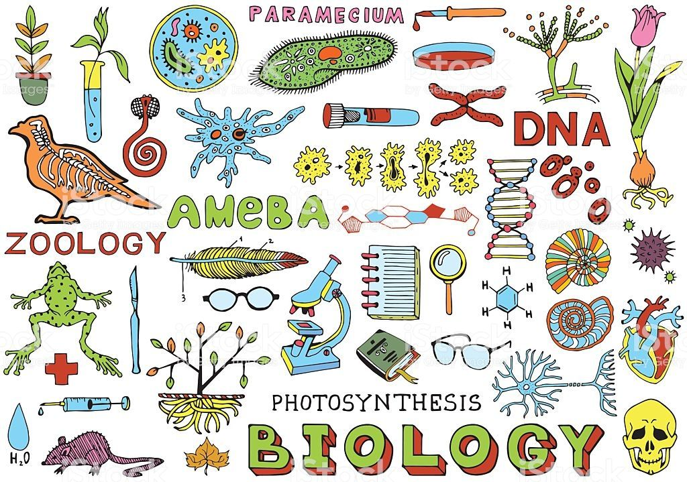

Está página está creada para que mis alumnos puedas visitarla en caso de que no comprendan algún tema visto o por ver en nuestra clase, la biología no es dificil de comprender pero les tiene que gustar para que puedan aprender todas las maravillas de esta ciencía. La Biología, basándose en los conocimientos adquiridos a lo largo de todas las etapas anteriores, tiene como objetivo fundamental favorecer y fomentar la formación científica del alumnado, partiendo de su vocación por el estudio de las ciencias. Los grandes avances y descubrimientos de la Biología, que se suceden de manera constante y continua en las últimas décadas, no solo han posibilitado la mejora de las condiciones de vida de los ciudadanos y el avance de la sociedad sino que al mismo tiempo han generado algunas controversias que, por sus implicaciones de distinta naturaleza (sociales, éticas, económicas, etc.) no se pueden obviar y también son objeto de análisis durante el desarrollo de la asignatura. La materia de Biología proporciona al alumnado un conjunto de conocimientos que se refieren a hechos, conceptos, procedimientos y destrezas, así como un marco de referencia ético en el trabajo científico. Todo ello debe contribuir a formar ciudadanos informados, y por tanto críticos, con capacidad de valorar las diferentes informaciones y tomar posturas y decisiones al respecto. Se pretende así ampliar la complejidad de la red de conocimientos en este campo, ya que algunos de los que se van a estudiar este curso ya han sido adquiridos a lo largo de las etapas anteriores, y profundizar en las actividades intelectuales más complejas que ahora se es capaz de realizar, fortaleciendo tanto las actitudes propias del trabajo científico como las actitudes positivas hacia la ciencia, siempre teniendo en cuenta sus intereses y motivaciones personales. Y esto sin olvidar el marcado carácter orientador y preparatorio para estudios o actividades posteriores que la Biología tiene en el bachillerato. La Biología es la ciencia que estudia los seres vivos. Su nombre procede del griego Bios, que significa vida, y logos, que significa estudio o tratado. La posición que ocupa esta ciencia entre las llamadas "ciencias de la naturaleza" (las que se ocupan del estudio de la materia) es en cierto modo paradójica, ya que se trata de una posición al mismo tiempo marginal y central. Marginal porque la materia viva, de la cual se ocupa, es sólo una porción infinitamente pequeña de toda la materia que existe en el universo. Pero también central porque dentro de esa pequeña porción nos encontramos nosotros, los seres humanos. Desde los albores de la civilización el hombre se plantea, y aspira a encontrar respuesta, a preguntas de tipo filosófico acerca de nuestro papel en el Universo quiénes somos?, de donde venimos?,a dónde vamos?, etc. Así, al sabernos parte de la materia viva, esperamos que su estudio nos pueda ayudar a resolver estos interrogantes.
